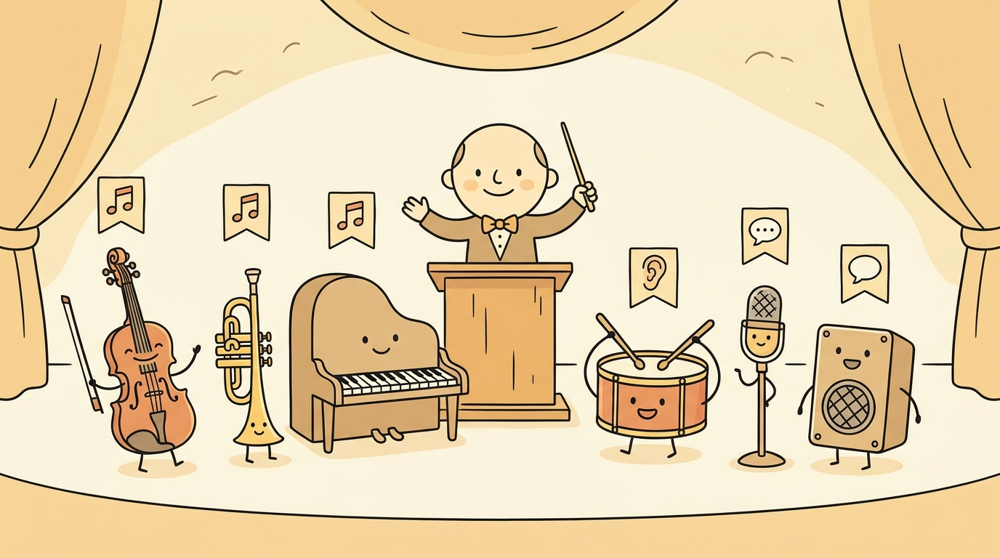

"Before you can synthesize a voice, you have to know what kind of audio question you are asking. Half of practical audio AI is choosing the right pipeline name."
Echo, Pitch-Perfect AI Agent
Sections 20.1 through 20.10 dive into specific generators and recognizers. Before that deep dive, this opening section gives the reader a map of the territory. Audio AI splits cleanly into two halves: understand (turn audio into a label, a transcript, or a speaker ID) and generate (turn text, prompts, or other audio into new audio). Every task in this book lives in one of those halves, and almost every modern recipe is a HuggingFace pipeline plus a checkpoint. The next five sub-sections (20.0.1 through 20.0.5) build the foundational scaffolding (data representations, codec tokens, transformer architectures, self-supervised encoders, classifiers) that the rest of the chapter assumes the reader already knows.
Prerequisites
This section assumes only that the reader has seen a transformer (Chapter 3) and the HuggingFace pipeline abstraction (Chapter 7). Domain-specific signal-processing background lives in Appendix G: Signal Processing for Audio, and the new sub-section Section 20.0.1 revisits the parts that matter for neural pipelines. No prior audio engineering experience is required.

20.0.1 The Bipartite Taxonomy: Understand vs Generate
A useful first cut on audio tasks splits them into understanding and generation. Understanding tasks consume audio and emit a discrete label, a token sequence, or a numeric embedding. Generation tasks consume text or another audio prompt and emit a waveform. The same backbone transformer often shows up on both sides: Whisper runs as an encoder-decoder for speech recognition, but the encoder alone (or a wav2vec 2.0 / HuBERT relative) feeds classification heads for keyword spotting, intent detection, and language identification. EnCodec serves as the audio tokenizer for both ends, encoding waveforms into discrete tokens for understanding pipelines and decoding tokens back to waveforms for generation pipelines. Once the reader internalizes this duality, the rest of Chapter 20 reads as a tour of which backbone, which codec, and which head get plugged into which job.
20.0.2 The Understand Side at a Glance
Four classification flavors cover most of what practitioners do with audio. Audio content classification assigns broad acoustic categories: music versus speech versus environmental noise, useful for routing audio to the right downstream model. Audio event classification labels short sound events: alarm, glass break, dog bark, gunfire. The AudioSet benchmark (Gemmeke et al., 2017) defines 527 such event classes and trained the first wave of audio classifiers. Speech intent classification maps spoken utterances to action labels (the MINDS-14 dataset has classes like pay_bill, card_issues, transfer) and underlies most voice-controlled assistants. Keyword spotting (KWS) listens for a small closed vocabulary like "stop", "play", or a wake-word like "OK Google"; because the vocabulary is bounded, KWS models are tiny enough to run on always-on microcontrollers.
Recognition tasks go beyond a single label. Automatic speech recognition (ASR) maps a waveform to a transcript; Whisper, wav2vec 2.0, and HuBERT are the dominant backbones. Speaker identification maps a waveform to a person's ID. Language identification tags each clip with the language being spoken; the FLEURS dataset (Conneau et al., 2023) covers 102 languages including many low-resource ones, and a Whisper-based head is the standard recipe.
HuggingFace exposes every understand-side task through a one-line pipeline call. The three most common entry points are:
from transformers import pipeline
# Audio classification (works for content, events, intent, KWS depending on checkpoint)
clf = pipeline("audio-classification", model="MIT/ast-finetuned-audioset-10-10-0.4593")
print(clf("clip.wav", top_k=3))
# Automatic speech recognition (Whisper, wav2vec2, HuBERT all use this task name)
asr = pipeline("automatic-speech-recognition", model="openai/whisper-small")
print(asr("speech.wav"))
# Zero-shot audio classification (CLAP)
zs = pipeline("zero-shot-audio-classification", model="laion/clap-htsat-unfused")
print(zs("clip.wav", candidate_labels=["sound of a dog", "sound of a vacuum cleaner"]))MIT/ast-finetuned-speech-commands-v2 for keyword spotting, anton-l/xtreme_s_xlsr_300m_minds14 for MINDS-14 intent classification, sanchit-gandhi/whisper-medium-fleurs-lang-id for FLEURS language identification, and so on. Section 20.0.5 walks through each of these in detail.20.0.3 The Generate Side at a Glance
Generation also splits into a small number of recurring tasks. Speech generation (TTS) maps text to a spoken waveform. Sections 20.1 and 20.2 cover this in depth: VITS, Bark, and F5-TTS for the canonical recipes, plus zero-shot voice cloning where five seconds of reference audio condition the synthesis. Music generation turns a textual description ("upbeat techno with heavy bass") into music, with MusicGen and MusicLM as the open-research references and Suno and Udio as the consumer products (Section 20.3). The Bark codec language model is unique in covering both speech and song: feeding it lyrics produces a sung performance, blurring the line between TTS and music generation. Sound and event generation covers everything that is neither speech nor music: alarms, footsteps, weather, Foley sound effects for film. AudioLDM (Liu et al., 2023) and TANGO (Ghosal et al., 2023) are the reference text-to-audio diffusion architectures here.
The same one-line pipeline pattern works on the generate side, though most production systems use the lower-level processor + model API for control over guidance scale, classifier-free guidance, and so on:
from transformers import pipeline
# Text-to-speech (returns a dict with 'audio' and 'sampling_rate')
tts = pipeline("text-to-speech", model="microsoft/speecht5_tts")
out = tts("Hello world", forward_params={"speaker_embeddings": speaker_emb})
# Text-to-audio (sound events, music; AudioLDM, MusicGen)
gen = pipeline("text-to-audio", model="facebook/musicgen-small")
out = gen("Lo-fi hip hop with a relaxed piano", forward_params={"do_sample": True})
# Automatic speech recognition is the bridge: feed generated speech back in to verify
asr = pipeline("automatic-speech-recognition", model="openai/whisper-small")
print(asr(out["audio"]))pipeline abstraction covers both halves of the bipartite taxonomy. The closing two lines hint at a common evaluation trick: run generated speech back through ASR and compute word error rate against the prompt as a cheap proxy for intelligibility.20.0.4 What the Rest of Chapter 20 Builds
The remaining sub-sections of this opening (20.0.1 through 20.0.5) install the foundational vocabulary that Sections 20.1 through 20.10 take for granted:
- Section 20.0.1: Audio Data and Representations. Waveforms, sampling rate, bit depth, the decibel scale, FFT and STFT, the mel scale, the log-mel spectrogram (the canonical input to Whisper and AST), and the MFCC pipeline that dominated classical ASR.
- Section 20.0.2: Audio Codec Models and Vector Quantization. Vector quantization, product quantization, residual vector quantization (RVQ), the straight-through estimator, the Gumbel-Softmax trick, and the EnCodec / SoundStream / DAC / Mimi codec lineage that turns waveforms into LLM-style token streams.
- Section 20.0.3: Audio and Speech Transformer Architectures. Waveform versus spectrogram inputs, the Audio Spectrogram Transformer (AST) as ViT-on-mel, Conformer as the production ASR workhorse, Whisper as the encoder-decoder reference, and Connectionist Temporal Classification (CTC) as the alternative to sequence-to-sequence ASR.
- Section 20.0.4: Self-Supervised Audio Encoders. wav2vec 2.0 (contrastive), HuBERT (masked cluster prediction), WavLM (HuBERT plus utterance mixing), and BEATs (self-distilled tokenizer), with a cheat-sheet table comparing all four.
- Section 20.0.5: Audio Classification with CLAP and Supervised Fine-Tuning. The four classification flavors from this section, plus CLAP (Contrastive Language-Audio Pretraining) for zero-shot recognition and the DistilHuBERT plus GTZAN supervised fine-tuning recipe.
After Section 20.0.5 the chapter pivots to the original ten sections: TTS (20.1), voice cloning (20.2), music generation (20.3), audio editing (20.4), speech recognition (20.5), and the video half from Section 20.6 onward.
Reader who wants the math of Fourier transforms, sampling theorem, and convolution should detour through Appendix G: Signal Processing for Audio before Section 20.0.1. Reader who wants the vector quantization theory in its non-audio form should review Section 1.6 on text tokenization for the discrete-representation intuition that translates directly to audio codecs. Reader who needs a transformer refresher before the architecture deep dive should re-read Chapter 3.
My first week on the audio team I shipped a "text-to-speech" prototype that was actually a speech recognizer wired backwards. The audio came out as silence, the logs filled with confused log-mel tensors, and a senior engineer kindly pointed out that I had picked the wrong half of the bipartite taxonomy. Two pipelines, one diagram, one career-defining lesson. Now I tape the Understand/Generate map to my monitor before opening any audio repo. An AI Model Who Has Read This Section Three Times
Audio AI splits into understand (audio in, label or text out) and generate (text in, waveform out). Four classification flavors (content, events, intent, KWS), three recognition tasks (ASR, speaker ID, language ID), and three generation families (speech, music, sound events) cover the practical surface. The five sub-sections that follow this overview (20.0.1 through 20.0.5) install the data, codec, transformer, self-supervised encoder, and classifier scaffolding that the rest of Chapter 20 relies on.
What Comes Next
Section 20.0.1 starts at the bottom of the stack: how a continuous sound wave becomes the tensor that Whisper, AST, and wav2vec 2.0 actually consume. Reader who already knows waveforms, STFT, and log-mel spectrograms can skim 20.0.1 and jump to Section 20.0.2 on codec models.